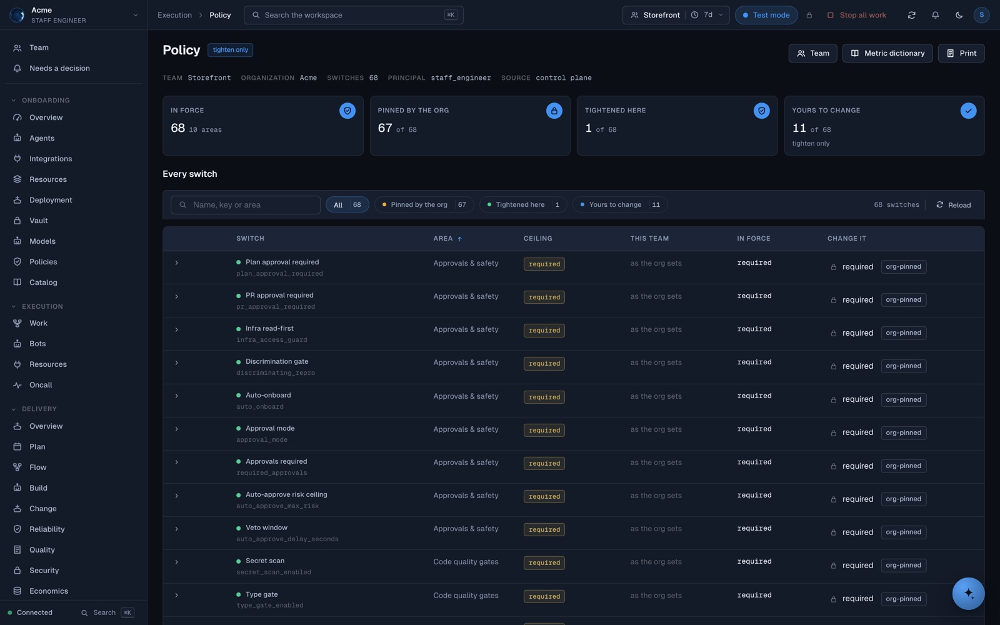
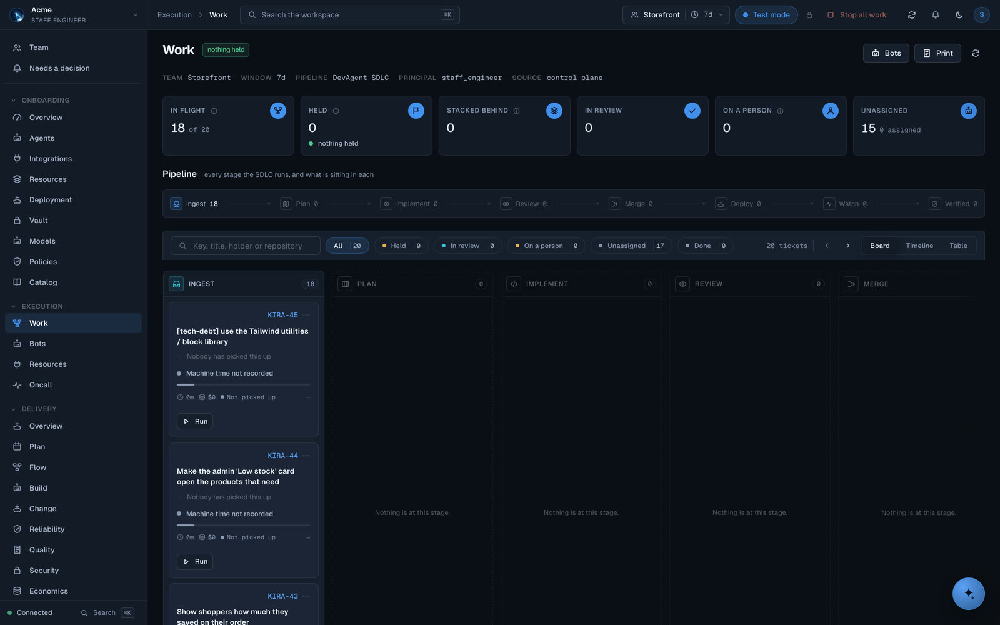

Toorunt AI
An AI engineering team that ships a company's Jira backlog inside its own Jira and GitHub, with people signing off at three points.
- Problem
- Most teams have more tickets than engineers. AI coding tools can write the code, but nobody can say who approved a change or prove it was tested before it shipped.
- What I built
- A platform that takes each ticket from plan to release. People sign off only on the plan, the pull request and the merge. Every change clears 14 deterministic gates, each bot has its own least-privilege Jira and GitHub identity, review is bot-to-bot and adversarial, and every decision lands in a hash-chained audit log.
- A contract compiler turns a signed PRD into acceptance tests, and each test must fail before any code is written. Builds run in distributed work packets with Redis leases and fencing tokens. Code is built in one place and judged in another: CodeBuild makes the image, and credential-less Fargate sandboxes verify it.
- Result
- A ticket on a demo codebase went from intake to deployed release in 2 h 51 min. Release CI passed 11,153 tests with 0 failures. A staging run of 4 work packets on 3 workers reached 100% first-pass success.
Follow ticket KIRA-24
One ticket, intake to release
- 01Bot
Intake
A ticket lands in the customer's own Jira. A bot with its own least-privilege identity picks it up.
- 02Person signs
Plan
A planning bot writes the plan. A person signs it off. Sign-off 1 of 3.
KIRA-24: intake to plan in 21 min 41 s
- 03Gate
Contract
The signed PRD compiles into acceptance tests. Every test must fail before any code is written, and passes only on the exact candidate revision.
- 04Bot
Build
Work splits into packets that run on distributed workers, with Redis leases, fencing tokens and work stealing. CodeBuild makes the image.
KIRA-24: plan approval to pull request in 1 h 31 min
- 05Gate
Verify
Credential-less Fargate sandboxes judge what was built, separately from where it was built. The change has to clear 14 deterministic gates.
- 06Person signs
Review
A separate bot reviews the pull request adversarially. Then a person approves it. Sign-off 2 of 3.
KIRA-24: pull request to peer approval in 9 min 27 s
- 07Person signs
Merge
A person approves the merge. Sign-off 3 of 3. Organisation policy can pin these approvals so a team can only tighten them.
- 08Bot
Release and watch
The release ships and is watched after merge. Every decision on the way is written to a hash-chained audit log.
- Released
2 h 51 min
From intake to deployed release for KIRA-24, on a demo codebase.
Release CI: 11,153 passed · 0 failed

